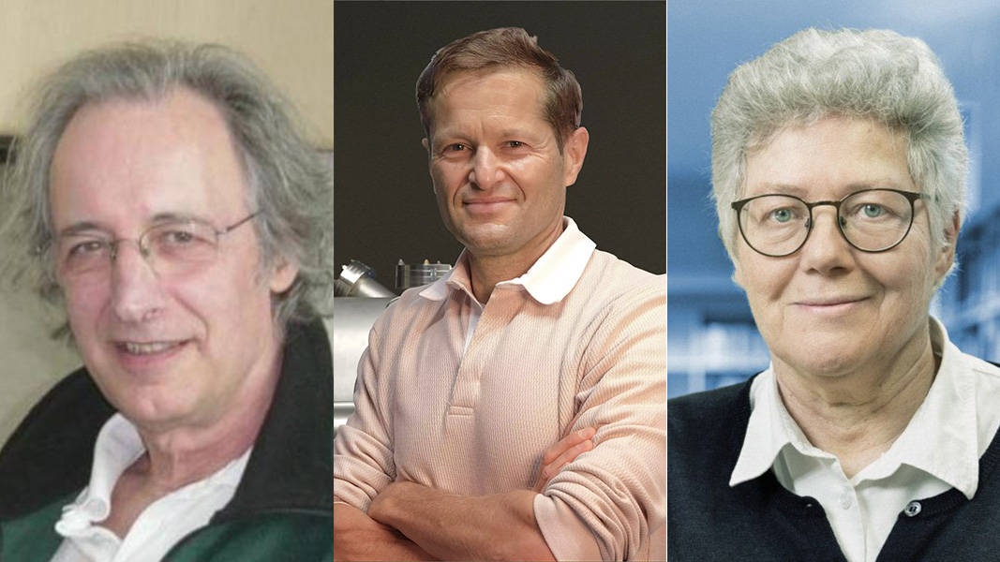
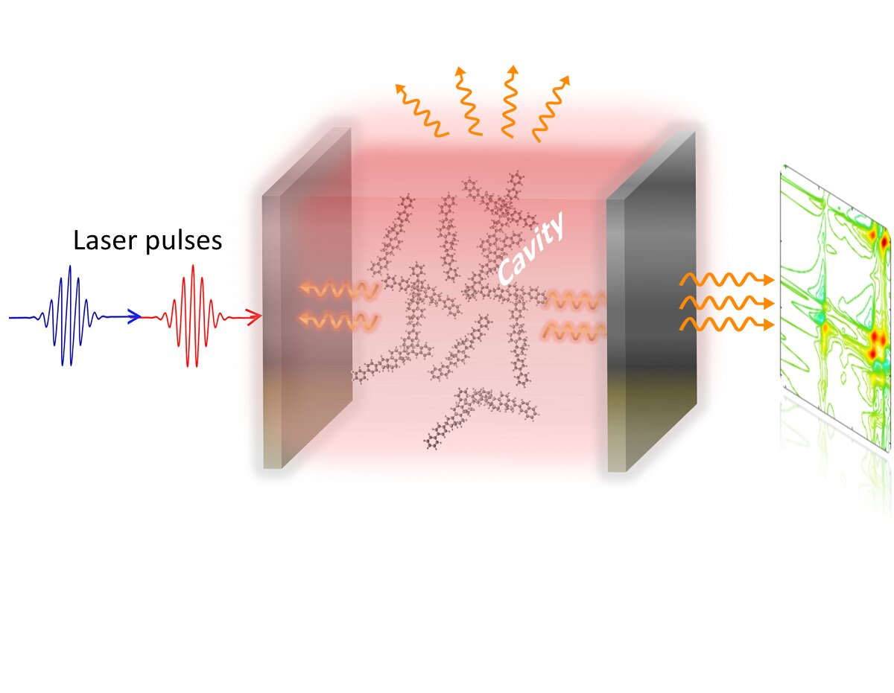

The Nobel Prize in Physics 2023 has been awarded to Pierre Agostini, Ferenc Krausz, and Anne L'Huillier for their revolutionary work in capturing the shortest moments ever observed, using the medium of light. This groundbreaking achievement not only pushes the boundaries of our understanding of the universe but also opens up new frontiers in the field of physics.
The Journey to the Discovery
The journey of this discovery began with exploring the fundamental particles that constitute our world. Light, the most ubiquitous and yet enigmatic of forces, has always been at the forefront of scientific exploration. Agostini, Krausz, and L'Huillier embarked on a quest to delve deeper into the behavior of light and its interactions with matter.
The Breakthrough Experiment
Their experiments involved using ultra-short laser pulses, a technique that allows for the observation of phenomena occurring in attoseconds (an attosecond is one quintillionth of a second). This incredible technology made it possible to 'freeze' time to an extent never before achieved, providing unprecedented insights into the interactions between light and matter at the most fundamental level.
Unraveling Mysteries of the Quantum World
The work of these laureates has profound implications for quantum physics. By capturing such fleeting moments, they have provided a window into the quantum world, which behaves very differently from the macroscopic world we are familiar with. Their research aids in the understanding of fundamental quantum mechanics principles, which could revolutionize how we think about energy, matter, and the very fabric of the universe.
Implications and Future Prospects
The implications of this research are vast and varied. From the development of new materials and technologies to advancements in medical imaging and treatment, the potential applications are as far-reaching as they are exciting. Moreover , this achievement propels us closer to the dream of mastering quantum computing, which promises to surpass the capabilities of traditional computing by leaps and bounds.
css Copy codeA Beacon of Inspiration
As we celebrate this remarkable achievement, it's crucial to acknowledge how it stands as a testament to the power of curiosity, perseverance, and scientific rigor. Agostini, Krausz, and L'Huillier's work is not just a milestone in physics; it's a beacon of inspiration for future generations to continue exploring the uncharted territories of science.
Conclusion
The Nobel Prize in Physics 2023 serves as a reminder of the relentless human pursuit of knowledge and understanding. As we marvel at the ability to capture the shortest of moments, we stand on the brink of a new era in physics, one that promises to unravel more mysteries of our universe. The journey of discovery continues, and the work of these eminent scientists lights the way forward.
In the grand tapestry of scientific endeavor, this achievement marks a significant milestone. It reinforces the idea that the pursuit of knowledge is an ever-evolving journey, not just a destination. The work of Agostini, Krausz, and L'Huillier exemplifies how a deeper understanding of fundamental concepts can lead to practical advancements that benefit humanity in numerous ways.
As we reflect on this monumental achievement, it's exciting to ponder what future discoveries await us. Just as the experiments with light have captured the shortest of moments, they have also opened up a long horizon of possibilities, promising to illuminate the path of scientific discovery for years to come.
In conclusion, the Nobel Prize in Physics 2023 isn't just a recognition of a remarkable scientific achievement; it's a celebration of the human spirit's relentless quest to understand the universe we inhabit. It's a reminder that in the realm of science, every moment—no matter how brief—holds the potential to change our understanding of the world.